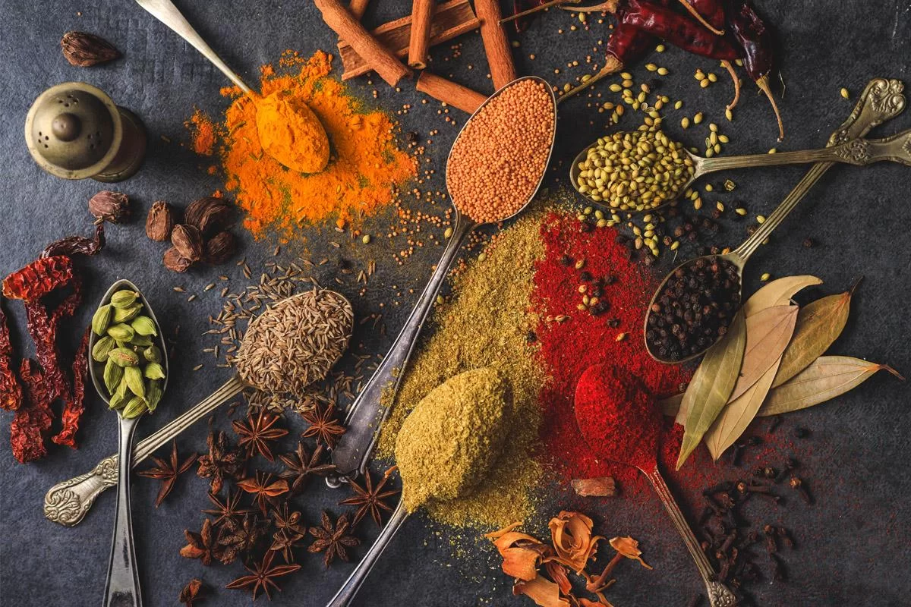
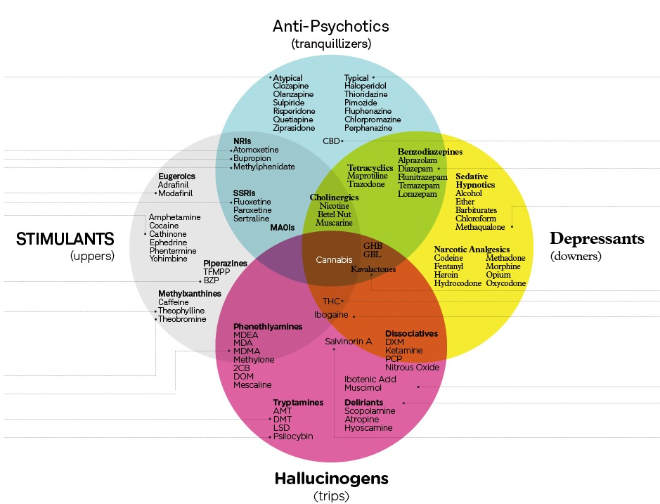
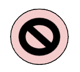
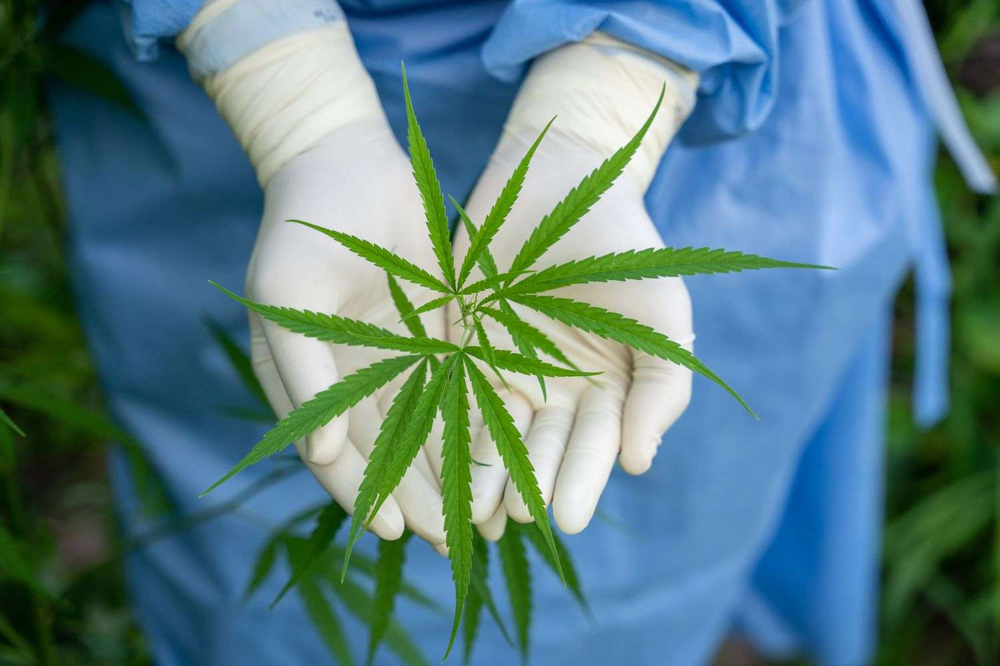
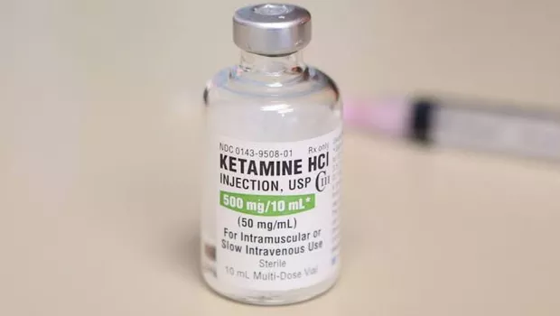

- Curiosidades Relacionados às Drogas -
Heroína
•Já foi considerada como um remédio para a cura do alcoolismo;
•A sua utilização começou nos doentes, anteriormente tratados por morfina, e entre 1890 e 1910, esta era a publicidade da época.
O Feitiço virou-se contra o feiticeiro
•Especula-se que Heinrich Dreser, químico alemão responsável pelo projeto da heroína, tornou-se viciado em heroína e faleceu.
Heroína de queijo

•Heroína de queijo é uma mistura de heroína mexicana de alcatrão preto e um medicamento para o resfriado que é vendido sem receita médica como o Tylenol PM. Apesar de seu nome possuir a palavra “queijo”,sua composição química não possui nenhuma de suas propriedades, porém sua massa e textura aparentam lembrar a de um queijo.
Esta droga alternativa é uma combinação mortal resulta na diminuição das funções vitais do corpo, como respiração e batimentos cardíacos, resultando assim em sua morte.
Heroína burguesa
•A heroína chique foi um movimento na fotografia de moda, com modelos de moda finos, que pareciam estar presos a drogas. Olhares vazios, pele pálida e olheiras eram outras características. Ocorreu quando uma versão mais barata de heroína entrou no mercado americano da Colômbia, que supera a heroína proveniente da Ásia e do sul da Ásia, consequentemente houve o aumento do número de usuários de heroína.
A doce e inocente flor que tem no seu jardim, possui em seu interior substâncias prejudiciais!

Na flor de papoila produz-se duas substâncias, uma é o ópio e a outra é a morfina, onde ambas têm poderes analgésicos.
Existem temperos culinários que possuem características psicodélicas?
Esta afirmação é verdadeira, porque há determinados temperos que sem que nós apercebemo-nos estão presentes no nosso dia a dia, tais como:
- Baunilha
- Pimenta-do-reino
- Açafrão
- Canela
- Noz-moscada
Tailândia liberou a Cannabis
Recentemente foi anunciado que a Tailândia é o primeiro país da Ásia a legalizar o cultivo e consumo de maconha em seu território, porém, ainda não há regras muito claras sobre sua autorização.
Há mais tipos de cocaína?São todas iguais?
•O nome correto da cocaína rosa é 2C-B, ou 2-dimetoxibenzaldeído, a cocaína rosa é mais perigosa do que a cocaína que estamos acostumados, mesmo que ambas tenham os mesmos efeitos no organismo.
•No entanto, a cocaína rosa tanto pode ter um pó rosa como um pó branco que pode muitas das vezes ser confundido com a cocaína normal.
Quem diria que os cogumelos estariam relacionados com a
LSD… mas de que forma?
•Como sabes , os cogumelos alucinógenos, em geral, são cogumelos selvagens que contêm a substância psilocibina - um composto psicoativo e alucinógeno de ocorrência natural.

•Normalmente são consumidos após serem preparados devidamente por secagem, que depois podem ser misturados com outros alimentos se tiver a intenção de consumi-los na forma a via oral, pois há como uma forma de fumar estes cogumelos, mesmo que seja mais raramente.
•Embora certas culturas sejam conhecidas por usar as propriedades alucinógenas de alguns cogumelos há séculos, a psilocibina foi isolada pela primeira vez em 1958 pelo Dr. Albert Hofmann, que também descobriu o ácido lisérgico (LSD), considerado também o Pai da LSD!!!
O mundo das drogas está a ficar cada vez mais vasto…
ISSO não é nada bom…
•Vamos recapitular um facto que é “cada vez mais o número de consumidores de drogas está a aumentar, o seu tráfico e fabrico”.
•Hoje em dia existem a sintetização de várias drogas de forma, geralmente ilegal e controversa, tal como a existência de smart-shops que facilitam no tráfego e distribuição de drogas e o mercado negro.
•Para vos alertar selecionamos uma notícia do “Diário de Notícias” que fala sobre estas lojas ilegais em Portugal e a existência de novas drogas
Vídeo da “RTP” que fala sobre a proibição de venda de várias substâncias nas smartshops:🔗
Infográfico que relaciona cada tipo de droga com a sua classificação de forma complexa
Um conceito que muitas pessoas confundem
Chamar as drogas em geral de narcóticos é incorreto, pois só são considerados narcóticos substâncias que fazem dormir!!!
Atenção!!!
•Quando alguém disser para não tocar em drogas, sigam o conselho à risca, porque as drogas, tal como por exemplo a cocaína pois entra em contato com a pele e de seguida na corrente sanguínea.
•Ao contrário dos filmes policiais,para que a polícia possa tocar a droga com segurança, é necessário utilizar um líquido impermeabilizante antes, que protege a pele do contato com a droga.
-SABIAS QUE?????-
A origem da palavra provém da palavra “droog” (holandês antigo) que significa folha seca.
Isto porque, antigamente, a maioria dos medicamentos era à base de vegetais.
Freud e a cocaína
•O verdadeiro responsável por descobrir as propriedades farmacológicas da cocaína foi o pai da psicanálise, Sigmund Freud. Quando era mais novo, ele estava mais inclinado à pesquisa do que à prática da medicina, pela qual parecia sentir verdadeira aversão. Em 1884, um artigo de um médico militar com o título "A importância e os efeitos psicológicos da cocaína" chegou às mãos de Freud. E embora ele nunca tenha ouvido falar da substância, acreditou que ela poderia ser usada para tratar algumas doenças mentais.
•Freud iniciou seus estudos sobre a cocaína. A princípio, ele mesmo provou a substância e comprovou uma melhoria no seu estado depressivo. Ele descreveu que sentia uma maior segurança e conseguia trabalhar com maior eficácia.

•Em 1884, ele escreveu um livro chamado de “Über coca” , no qual afirmou que esta substância era um remédio muito eficaz para combater a depressão, eliminar o desconforto gástrico nervoso e aumentar a capacidade de rendimento físico e intelectual. Ele afirmava também que a substância não produzia vício, nem efeitos colaterais.
•Após escrever 5 artigos a defender esta substância e a enumerar as suas vantagens, ele abandonou a defesa da substância porque ele verificou os efeitos negativos da cocaína e o que afetou-o mais nessa decisão foi a morte do seu amigo Ernst Fleischl.
•Apesar disso, ele recomendou a cocaína ao oftalmologista Karl Köller, que confirmou a grande eficácia da substância ao diluí-la em forma de colírio, como anestésico em cirurgia ocular, para intervenções como as de cataratas. Com esta descoberta, a medicina deu um passo importante, e nasceu a anestesia local.
Quais são as drogas mais consumidas em Portugal?
Em Portugal, as drogas mais consumidas são:
- Cannabis
- Cocaína
- Heroína
- Outros produtos sintéticos
Quitzilla
Ao longo da nossa pesquisa, encontramos esta aplicação, que não é desenvolvida por nós, mas sim pela empresa despDEV, que é de confiança e é gratuita com uma pontuação de 4.7 estrelas no Google play store.
Para quem não tem dinheiro para consultas ou terapias, esta pode ser uma solução que minimiza o estrago do vício de drogas.
Claramente que antes de colocarmos a app nas curiosidades nós testamos o seu funcionamento e temos algumas coisas a garantir:
•A app possui várias opções de escolha de vícios (não só drogas e comprimidos, mas também outras coisas que também afetam a nossa sociedade na atualidade;
•Contém um cronómetro que marca o tempo em que estás sem o vício;
•Frases motivacionais se abanares o teu telemóvel;
No entanto a aplicação apresenta imperfeições, tais como:
•anúncios nos cantos da tela;
•Existe uma versão premium que é necessária pagar (com ela podes colocar mais do que um vício);
•Apenas monitora o tempo que estás sem o vício, ou seja não é um controlo 100% eficaz;
Como dissemos inicialmente, esta app tem um grande potencial, no entanto é uma forma de minimizar o vício e não resolve a 100%.
O nosso tema é especialmente as drogas e os comprimidos (porque há drogas em formatos de cápsulas e comprimidos e existe uma aba sobre isso, como referimos anteriormente)!!
E aqui uma coisa importante temos a dizer-vos que as melhores soluções são as consultas diárias, idas ao centro de reabilitação, terapia ,idas ao psiquiatra e procurar ajuda médica credenciada!!
Cannabis afeta mais os homens do que as mulheres?
•De acordo com os estudos feitos pelo “Drug and Alcohol Dependence" apontam que os efeitos da Cannabis agem de maneira diferente nos homens e nas mulheres, porque os efeitos da Cannabis são mais intensos nos homens do que nas mulheres, pois a pesquisa acredita que apesar das mulheres serem mais sensíveis aos efeitos analgésicos da Cannabis, elas têm uma certa tolerância a esta droga.
•Mas claramente os efeitos são diferentes de pessoa para pessoa, porque cada organismo tem as suas vulnerabilidades.
Cola Cola
As primeiras garrafas de Coca Cola continham 3,5 gramas da substância (Cocaína), mas esse "ingrediente" foi eliminado da receita após 1988 (Coca Cola).
Ketamina …mais conhecida como a droga cavalo?
A Ketamina é uma droga psicodélica com um poderoso anestésico dissociativo que se encontra sob a forma de pó branco, líquido que é consumido por via oral, inalada ou injetada.
Esta droga aumenta a atividade do sistema límbico, deprime seletivamente a função do córtex e do tálamo, consequentemente produz um efeito analgésico e amnésico.
O mais impressionante sobre esta curiosidade é que a Ketamina é utilizada como tranquilizante anestésico para os animais de grande porte, como por exemplo os cavalos e tem ficado cada vez mais popular devido ao seu uso recreativo e à sua aplicação de golpes do mesmo género do “Boa noite, Cinderela”.
Curiosidades EXTRAS !!!
Alguns produtos de algumas drogas que talvez você não conheça:
Cannabis
Brownie

Tênis

Piri-Piri com Cannabis

Remédio

Produtos de Beleza

Rebuçados

Óleo Extra Virgem da Cannabis

Preservativo

Cocaina
Remédios

Cogumelos Alucinogénios
Remédios em Cápsulas

Mel de Cogumelo